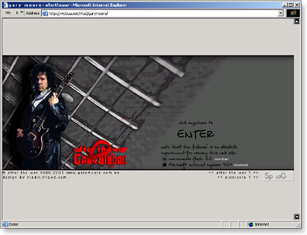
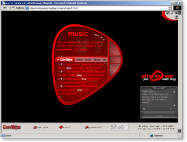

Gary Moore After The War is dedication site to a popular Irish guitarist, composer, and singer.

A splash page

Internal pages build in Macromedia Flash
August 11, 2001
Gary Moore After The War is dedication site to a popular Irish guitarist, composer, and singer.

